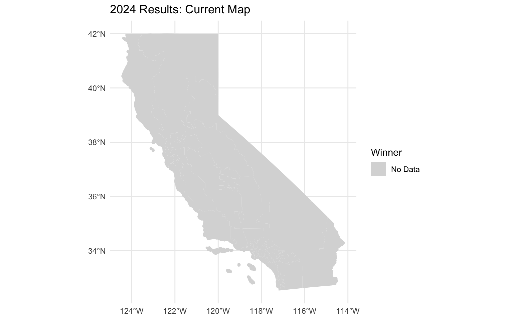

# A tibble: 52 × 3
district uspdem01 usprep01
<chr> <dbl> <dbl>
1 01 243745. 223427.
2 02 317707. 302416.
3 03 203879. 195560.
4 04 205020. 163946.
5 05 243996. 317274.
6 06 175022. 154837.
7 07 187744. 158232.
8 08 218202. 123559.
9 09 157030. 122739.
10 10 236048. 133233.
# ℹ 42 more rows# A tibble: 51,123 × 76
county fips svprec addist svprec_key election geo_type cddist sddist bedist
<dbl> <chr> <chr> <dbl> <chr> <chr> <chr> <dbl> <dbl> <dbl>
1 1 06001 200100 14 060012001… g24 svprec 12 7 2
2 1 06001 200100A 14 060012001… g24 svprec 12 7 2
3 1 06001 200200 14 060012002… g24 svprec 12 7 2
4 1 06001 200200A 14 060012002… g24 svprec 12 7 2
5 1 06001 201400 14 060012014… g24 svprec 12 7 2
6 1 06001 201400A 14 060012014… g24 svprec 12 7 2
7 1 06001 202200 14 060012022… g24 svprec 12 7 2
8 1 06001 202200A 14 060012022… g24 svprec 12 7 2
9 1 06001 202500 14 060012025… g24 svprec 12 7 2
10 1 06001 202500A 14 060012025… g24 svprec 12 7 2
# ℹ 51,113 more rows
# ℹ 66 more variables: totreg <dbl>, demreg <dbl>, repreg <dbl>, aipreg <dbl>,
# grnreg <dbl>, libreg <dbl>, nlpreg <dbl>, refreg <dbl>, dclreg <dbl>,
# mscreg <dbl>, totvote <dbl>, demvote <dbl>, repvote <dbl>, aipvote <dbl>,
# grnvote <dbl>, libvote <dbl>, nlpvote <dbl>, refvote <dbl>, dclvote <dbl>,
# mscvote <dbl>, prcvote <dbl>, absvote <dbl>, assaip01 <chr>,
# assdem01 <chr>, assdem02 <chr>, assrep01 <chr>, assrep02 <chr>, …Reading layer `tl_2024_06_cd119' from data source
`/Users/molly/Desktop/stat-133/gerrymandering-mollyurfalian/data/shapefiles/tl_2024_06_cd119/tl_2024_06_cd119.shp'
using driver `ESRI Shapefile'
Simple feature collection with 52 features and 13 fields
Geometry type: MULTIPOLYGON
Dimension: XY
Bounding box: xmin: -124.482 ymin: 32.52951 xmax: -114.1312 ymax: 42.0095
Geodetic CRS: NAD83Simple feature collection with 52 features and 13 fields
Geometry type: MULTIPOLYGON
Dimension: XY
Bounding box: xmin: -380101.1 ymin: -605252.6 xmax: 540037.5 ymax: 450446.7
Projected CRS: NAD83 / California Albers
First 10 features:
statefp cd119fp geoid geoidfq namelsad lsad cdsessn
1 06 23 0623 5001900US0623 Congressional District 23 C2 119
2 06 31 0631 5001900US0631 Congressional District 31 C2 119
3 06 44 0644 5001900US0644 Congressional District 44 C2 119
4 06 50 0650 5001900US0650 Congressional District 50 C2 119
5 06 27 0627 5001900US0627 Congressional District 27 C2 119
6 06 13 0613 5001900US0613 Congressional District 13 C2 119
7 06 20 0620 5001900US0620 Congressional District 20 C2 119
8 06 03 0603 5001900US0603 Congressional District 3 C2 119
9 06 09 0609 5001900US0609 Congressional District 9 C2 119
10 06 01 0601 5001900US0601 Congressional District 1 C2 119
mtfcc funcstat aland awater intptlat intptlon
1 G5200 N 46533428403 48562604 +34.9425038 -116.4363096
2 G5200 N 537872265 8524991 +34.1457683 -117.8916313
3 G5200 N 236044846 66196569 +33.8069363 -118.2410007
4 G5200 N 664411673 402346282 +32.7161493 -117.2243019
5 G5200 N 3926710657 32032579 +34.6066288 -118.3582840
6 G5200 N 16297746813 146694993 +36.9176544 -120.5768234
7 G5200 N 25052458116 128850046 +35.7564580 -118.6717298
8 G5200 N 56116600729 988931429 +37.8264603 -118.8597634
9 G5200 N 3488337938 94520307 +37.9778744 -121.2067415
10 G5200 N 68358619542 1696192460 +40.7590582 -121.7085861
geometry
1 MULTIPOLYGON (((157365.3 -3...
2 MULTIPOLYGON (((177857 -436...
3 MULTIPOLYGON (((152884.3 -4...
4 MULTIPOLYGON (((249129.8 -5...
5 MULTIPOLYGON (((101073.1 -3...
6 MULTIPOLYGON (((-137262 -43...
7 MULTIPOLYGON (((3580.506 -1...
8 MULTIPOLYGON (((-137623.7 1...
9 MULTIPOLYGON (((-147837.9 -...
10 MULTIPOLYGON (((-310416.4 4...Reading layer `AB604' from data source
`/Users/molly/Desktop/stat-133/gerrymandering-mollyurfalian/data/shapefiles/AB604/AB604.shp'
using driver `ESRI Shapefile'
Simple feature collection with 52 features and 15 fields
Geometry type: MULTIPOLYGON
Dimension: XY
Bounding box: xmin: -13857270 ymin: 3832931 xmax: -12705030 ymax: 5162404
Projected CRS: WGS 84 / Pseudo-MercatorSimple feature collection with 52 features and 15 fields
Geometry type: MULTIPOLYGON
Dimension: XY
Bounding box: xmin: -380102.2 ymin: -605326.6 xmax: 540036.5 ymax: 450447.3
Projected CRS: NAD83 / California Albers
First 10 features:
district a_pop deviation cvap hsp_cvap ind_cvap blk_cvap asn_cvap
1 42 760067 1 547320 134603 4347 36075 69836
2 40 760066 0 543973 152392 4037 28337 63206
3 49 760067 1 525988 96790 4217 16308 67875
4 47 760065 -1 514402 78502 2812 13187 130254
5 23 760066 0 514103 190014 6566 46719 22557
6 48 760066 0 518620 166118 6486 27573 43349
7 25 760066 0 494546 257693 5998 22647 17043
8 24 760065 -1 532407 150929 5447 11614 30697
9 52 760066 0 490770 254254 2185 43342 73711
10 51 760067 1 573012 132681 4721 44078 53569
wht_cvap cvap_pct hsp_cvap_p ind_cvap_p blk_cvap_p asn_cvap_p wht_cvap_p
1 295693 0.720094 0.245931 0.007942 0.065912 0.127596 0.540256
2 291303 0.715692 0.280146 0.007421 0.052093 0.116193 0.535510
3 336391 0.692028 0.184016 0.008017 0.031005 0.129043 0.639541
4 284408 0.676787 0.152608 0.005467 0.025636 0.253214 0.552891
5 242849 0.676393 0.369603 0.012772 0.090875 0.043876 0.472374
6 268028 0.682335 0.320308 0.012506 0.053166 0.083585 0.516810
7 187426 0.650662 0.521070 0.012128 0.045794 0.034462 0.378986
8 330619 0.700476 0.283484 0.010231 0.021814 0.057657 0.620989
9 110215 0.645694 0.518072 0.004452 0.088314 0.150195 0.224576
10 330267 0.753897 0.231550 0.008239 0.076923 0.093487 0.576370
geometry
1 MULTIPOLYGON (((194609.4 -4...
2 MULTIPOLYGON (((216125.6 -4...
3 MULTIPOLYGON (((218794.2 -4...
4 MULTIPOLYGON (((200995.2 -4...
5 MULTIPOLYGON (((273340.5 -4...
6 MULTIPOLYGON (((311779.4 -4...
7 MULTIPOLYGON (((309328.2 -4...
8 MULTIPOLYGON (((53295.58 -5...
9 MULTIPOLYGON (((343273.6 -5...
10 MULTIPOLYGON (((332887.9 -5...


Methodology For this project I used the SR precinct data on voting from the Statewide Database for the 2024 US House election in California. I joined the SR precinct votes to SR precinct geometries using the sf library. I compared the status quo map to the AB 604 map. For the current map I aggregated percent votes to 2024 congressional districts. For the AB 604 map I used area-weighted interpolation to estimate district level votes. I then computes the mean median vote share and the efficiency gap.